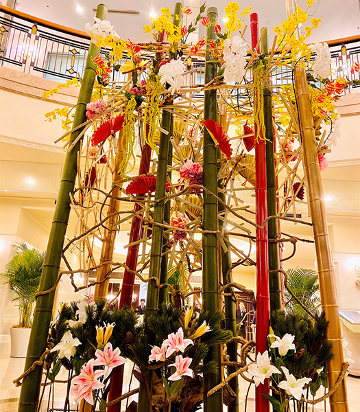

当社で制作したイベントなどの作品を通して、当社の仕事をご紹介

毎年お正月シーズンは東京の某ホテル館内を装飾しています。日本らしさのある「竹」とお正月を連想させる「赤と金」で彩りをしました。
秋に式を挙げられたお客様。新婦様の好きな「紅葉」をイメージしデザインをしました。
“白”で統一さを出しシンプルで豪華な造りに仕上げました。
バージンロードも場内が華やかになるよう彩りを行います。
“和風なイメージ”とオーダーを頂きました。カーネーションでグラデーションさせ造り上げています。
キャラクター好きな新婦様と一緒につくり上げました。土台はカーネーションで、顔造りは新婦様が自ら手作業で加工しています。
ある世界観が好きな新婦様からのオーダー。お花だけでなく小物も活用し細かく再現しました。こだわりの詰まったデザインです。
1年に4回四季に合わせて変更しています。こちらのお写真は夏にデザインしました。
「子供の好きな海をイメージさせたい」というご遺族の方からの思いをかたちにしました。
「野球がとにかく好きだった」というお話を聞き、お花で野球ボールを再現させました。
京都の嵐山をイメージ。山と川を細かく再現しました。
お客様から頂いたオーダーは「インパクト・豪華さ・デザイン性」 通常はしないデッサンから始めイメージつくりをし現場にてアレンジしながら装飾しました。